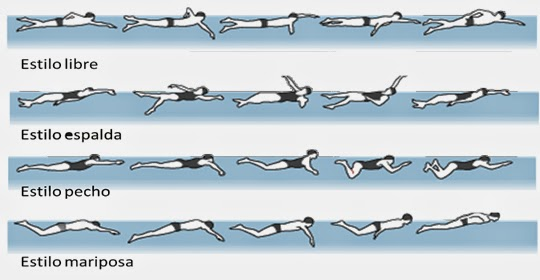
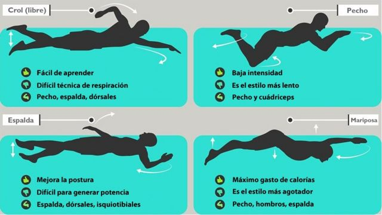
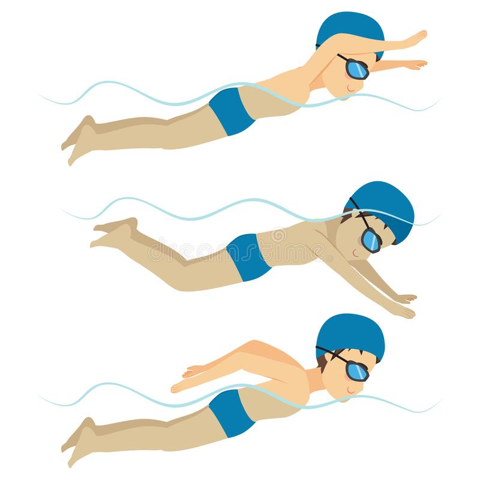

Como en nuestros gimnasios TOP Health disponemos de piscina, hoy queremos hablaros sobre los estilos básicos de natación para que en tu tiempo libre puedas ir y hacer natación de manera que aproveches nuestra piscina tanto como quieras. La natación es, a parte de refrescante, uno de los deportes más sanos y enriquecedores. Pues con ella trabajas todo el cuerpo de una manera dinámica, a la que puedes ajustar tu mismo el ritmo y la intensidad del ejercicio. Los 4 estilos básicos de natación son brazada, crol, espalda y mariposa. Cada uno de ellos tiene una técnica totalmente distinta y una dificultad también variada. Pues en algunos de ellos se necesita de más esfuerzo.

1. BRAZA
Este es el, digamos, estilo más fácil de realizar teniendo en cuenta el esfuerzo. Personas adultas e incluso con dificultades motrices pueden realizarlo sin gran ayuda. Además, en la técnica de movimiento no tiene un empuje como en el resto y su recobro se realizar dentro del agua. Es bastante relajante tras un duro entrenamiento.
2. CROL
Con el crol realizamos una acción de brazo y pierna que de manera alterna nos impulsan en mayor o menor medida, dependiendo siempre de la intensidad que le damos. Aunque puedes regular tu intensidad obviamente, necesitamos un mínimo de esfuerzo porque una de las partes más importantes de este estilo es permanecer en posición recta/estirada de manera horizontal. Cuando realizamos el movimiento de nado, mientras realizamos la brazada por fuera, el brazo dentro del agua está empujando. Por lo que nunca dejamos de tirar. El crol es el estilo más extendido pues no requiere de un exceso de técnica pero si que puede entrenarse duro en la piscina, además de ser bastante cómodo.

3. ESPALDA
Para hacer bien el estilo de espalda es necesario un mínimo de técnica y es posiblemente el estilo más «incómodo». Pues es el único en el que la posición es inversa y requiere de sumergir la cabeza boca arriba en el agua. Sin embargo, resulta muy satisfactorio aprender a realizar espalda y nadar con este estilo.
4. MARIPOSA
Este es el estilo que más cansa y no se recomienda que sea realizado por personas con problemas de espalda, pues en mariposa involucramos mucha intensidad para realizarlo. Además de que es necesaria una condición física moderada para poder entrenarlo en condiciones. Por ello es uno de los estilos más rápidos pues las brazadas abarcan más espacio y empleamos una fuerza mayor (empujamos con ambos brazos y piernas a la vez).
